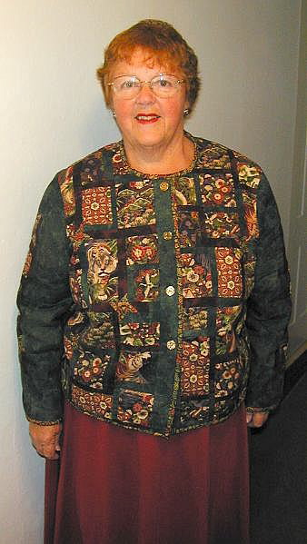

Up Next-->

Crouching tiger
This jacket was made for a trip to China. I chose the fabric based on the movie, "Crouching Tiger, Hidden Dragon." I put the crouching tiger on the front where it is easily seen, though there are others, and the hidden dragon prominently centered on the back where the wearer could not see it. Friendship stars are used at junctions and the buttons are in the style of Chinese coins.